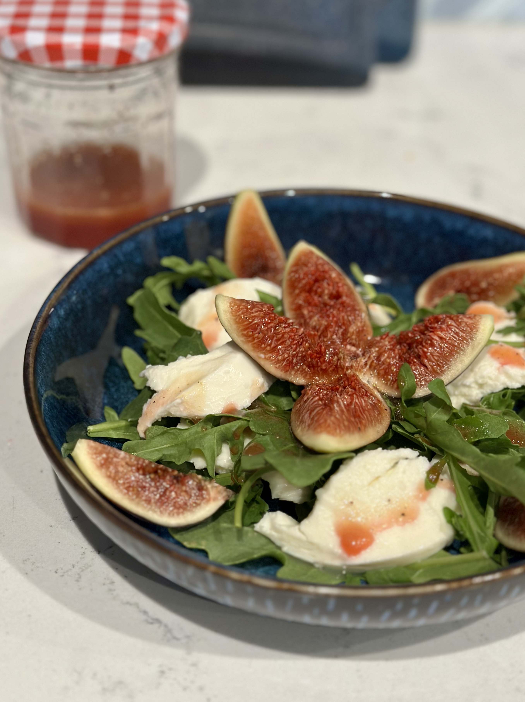

Overview
What are figs?
Figs are a type of edible fruit of the species Ficus carica, a flowering plant in the mulberry family. Although commonly called a fruit, a fig is actually a specialized structure called a syconium. The flowers grow inside this hollow structure rather than being exposed on the outside like the flowers of many other fruiting plants. The small structures that give the inside of a fig its characteristic texture are associated with these many tiny flowers and fruits.
Origin and History
Common figs are native to the Middle East and south-western Asia. Humans have cultivated figs for thousands of years, making them one of the world's oldest cultivated crops. They became particularly important throughout the Mediterranean, where the climate is well suited to fig trees.
Appearance and Flavor
Figs have a thin, edible skin surrounding a soft interior filled with many tiny seeds. Depending on the variety, their skin may be green, yellow, brown, red, or deep purple. Ripe figs are generally pretty sweet, but their flavor can range from light, almost honey-like to rich and jammy. Their numerous seeds provide a subtle crunch that contrasts with the texture of the soft skin.
Common Varieties
There are many varieties of edible figs, each differing somewhat in size, color, flavor, and sweetness. Black Mission figs have dark purple skin and a rich, sweet flavor. Brown Turkey figs are generally brownish-purple with a mild flavor. Kadota figs have a greenish-yellow skin and a lighter interior, while Calimyrna figs are typically green to golden in color and are known for their nutty, honey-like flavor.
Seasonality and Storage
Fresh figs are extremely perishable and are best eaten within a few days after they ripen. Depending on variety and growing conditions, fig trees may produce one or two crops during the year. In California, where about 99% of the United States' figs are grown, fresh figs are generally available during the summer and into the early fall. Dried figs, by comparison, can be stored much longer and are available throughout the year.
Pollination and Fig Wasps
Figs have an unusual relationship with fig wasps. Some types of figs depend on specialized wasps that enter the syconium and pollinate its internal flowers. Not every edible fig requires wasp pollination. Many common varieties are capable of developing fruit without pollination. However, most wild varieties of figs do require pollination by fig wasps.
Uses
- Eat them raw. They are naturally sweet with a deep flavor, and their interior seeds give them a pleasant, crunchy texture.
- Dry them. Dried figs become sweeter and chewier than their fresh counterparts.
- Make jams and preserves. Figs cook down into a thick spread that is perfect for toast, pastries, and cheese boards.
- Use as a topping for yogurt or salad. They add a nice sweetness and texture to many types of dishes.
- Bake with them. Fresh or dried figs can be used in cakes, breads, tarts, cookies, and other baked goods. Be sure to adjust sugar levels accordingly.
- Roast or grill them. They caramelize well and make a great topping for pizza or meat.
- Make sauces and glazes. Their sweetness can be balanced with acidic or savory ingredients to make a condiment for meats or vegetables.
- Add to pesto and spread over bread with cheese, or use as a sauce for pasta or pizza.
See Also
 Plums
Plums
 Tarte Tatin
Tarte Tatin
References
-
“Fig.” Encyclopaedia Britannica, Encyclopaedia Britannica, Inc., https://www.britannica.com/plant/fig. Accessed 20 Aug. 2026.
Used for general information about the fig's botanical structure, geographic origins, and cultivation history. This article also provides additional information about fig biology and cultivation. -
“Fig.” UC Statewide Integrated Pest Management Program, University of California Agriculture and Natural Resources, https://ipm.ucanr.edu/PMG/GARDEN/FRUIT/figs.html. Accessed 20 Aug. 2026.
Used for information about fig growth, fruit production, and pollination. This resource also provides detailed information about growing and caring for fig trees and managing common pests and diseases. -
California Figs. California Fig Advisory Board, https://www.californiafigs.com. Accessed 20 Aug. 2026.
Used for information about common fig varieties, their characteristics, and fig season in California. This site also provides recipes, nutritional information, and other resources about selecting, storing, and using figs.